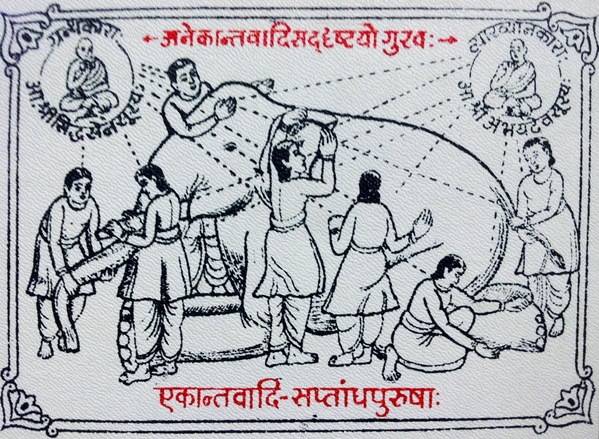

अनेक
Jain · Anekāntavāda
Many-sidedness
अनेकान्तवाद · the non-one-sided
Reality is too complex for any single viewpoint to capture whole. Every truth is partial, conditional — true from somewhere. So I stay humble in argument and hold space for the view I can't yet see.
अनेकान्तवाद · plate
